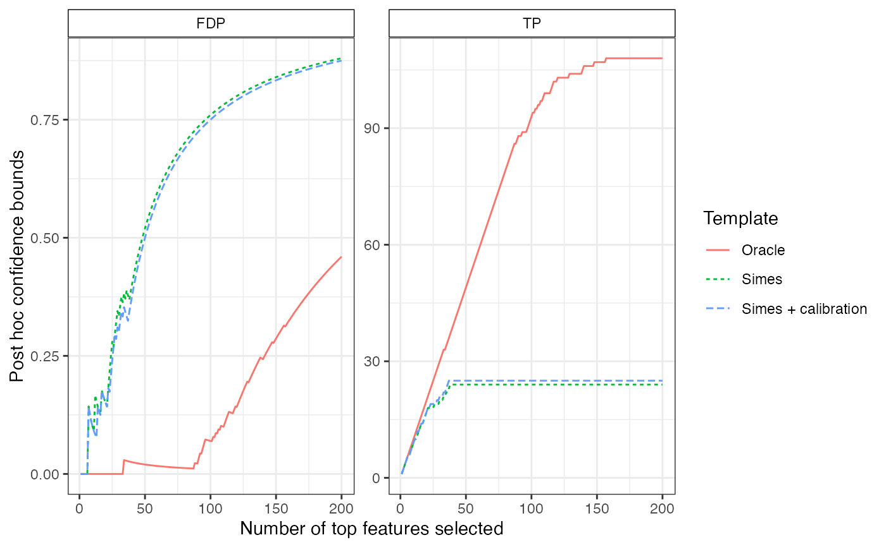

Calibration of of JER thresholds using one or two-sample tests
calibrateJER( X, categ, B, alpha, alternative = c("two.sided", "less", "greater"), rowTestFUN = rowWelchTests, refFamily = c("Simes", "kFWER", "Beta"), maxStepsDown = 10L, K = nrow(X), verbose = TRUE )
Arguments
| X | A matrix of \(m\) variables (hypotheses) by \(n\) observations |
|---|---|
| categ | An optional numeric vector of \(n\) values in \(0, 1\) specifying the column indices of the first and second samples. If not provided, a one-sample test is performed. |
| B | A numeric value, the number of permutations to be performed |
| alpha | Target JER level |
| alternative | A character string specifying the alternative hypothesis. Must be one of "two.sided" (default), "greater" or "less". |
| rowTestFUN | A (vectorized) test function. Defaults to
|
| refFamily | A character value which can be
|
| maxStepsDown | Maximum number of steps down to be performed. |
| K | For JER control over |
| verbose | A boolean value: should extra info be printed? |
Value
A list with elements:
- p.values
A numeric vector of
mp-values- pivStat
A numeric vector of length
B, the values of the pivotal statistic whose quantile of order \(alpha\) is \(lambda\).- thr
A numeric vector of length
K, such that the estimated probability that there exists an index \(k\) between 1 and \(K\) such that the \(k\)-th maximum of the test statistics of is greater than \(thr[k]\), is less than \(\alpha\)- lambda
A numeric value, the result of the calibration
- FP
A numeric vector of length
m, a 1-alpha confidence envelope on the number of false positives
Details
See testByRandomization for a description of the tests performed for calibration.
References
Blanchard, G., Neuvial, P., & Roquain, E. (2020). Post hoc confidence bounds on false positives using reference families. Annals of Statistics, 48(3), 1281-1303.
Author
Gilles Blanchard, Pierre Neuvial and Etienne Roquain
Examples
m <- 543 pi0 <- 0.8 sim <- gaussianSamples(m = m, rho = 0.4, n = 100, pi0 = pi0, SNR = 3, prob = 0.5) X <- sim$X categ <- sim$categ alpha <- 0.1 cal <- calibrateJER(X, categ, B = 1e2, alpha = alpha, refFamily="Simes") cal$lambda # > alpha (whp) if rho > 0#> 10% #> 0.229451# Application 1: confidence envelope # ie upper confidence bound for the number of false positives # among the k most significant items for all k env <- cal$conf_env plotConfidenceEnvelope(env, xmax = 200)## Compare to Simes (without calibration) and "Oracle" (ie truth from the simulation settings) env_Simes <- confidenceEnvelope(cal$p.values, refFamily = "Simes", param = alpha) env_Oracle <- confidenceEnvelope(cal$p.values, refFamily = "Oracle", param = (sim$H == 0)) all_env <- list("Simes + calibration" = env, "Simes"= env_Simes, "Oracle" = env_Oracle) plotConfidenceEnvelope(all_env, xmax = 200)# Application 2a: bound on the number of false positives in one or # more user-defined selections spval <- sort(cal$p.values) sel <- spval[c(1:10)] maxFP(sel, cal$thr)#> [1] 0#> [1] 6#> [1] 13#> [1] 0.9189687pi0#> [1] 0.8